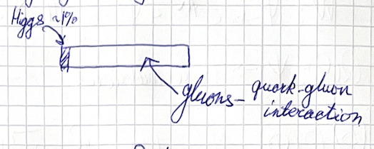
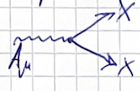
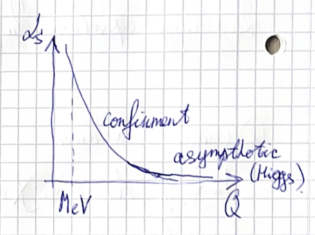

(2024) Lecture 1
Presenter: Mikhail Mikhasenko
Note Taker: Ilya Segal
1 The Evolution of the Universe and the Role of Hadrons
We are living in a universe made of hadronic physics, but it was not always the case.
I like to think of the evolution of the universe on a time scale. Here is the origin, the Big Bang, followed by several epochs. It started with the Planck epoch, then the electroweak epoch, then the quark epoch, and so on.
| Epoch | Time |
|---|---|
| Planck epoch | 10^{-36} s |
| Electroweak epoch | 10^{-12} s |
| Quark epoch | 10^{-6} s |
| Hadronization | 10^{-3} s (1 s) |
Just imagine: the time between when I clap my hands and you hear the sound is roughly 10 milliseconds. By that time, the universe had already passed through all these stages and hadronized. That is how quickly the universe evolved. The remaining interval up to 13.8 billion years is the age of our universe. There has been other interesting physics, but not as intense from the perspective of hadron physics.
Let me start with the electroweak epoch. The Higgs potential is the field that gives mass to particles and makes sure the proton does not decay, allowing our existence. The field that drives electroweak physics obtains a condensate. The electroweak phase is where the transition happens. The entire space is filled with a condensate of the Higgs field. As particles move through this condensate, they slow down, gain inertia, and obtain mass. This is known as the Higgs mechanism. The process of the potential evolving is called spontaneous symmetry breaking. I have drawn a Higgs potential here.
So what happens is that particles have masses. The universe starts evolving, and at some point we arrive at the quark epoch, where the universe is filled with a quark‑gluon plasma. Quarks and gluons form an unstructured soup—there is no structure formation yet. Quarks and gluons are together, and the universe is extremely hot. From that moment it starts cooling down. When the temperature is low enough, the medium begins to separate, and we arrive at the quantum chromodynamic epoch. The medium forms small volumes where the interactions of quarks and gluons are confined to a small scale.
If you think about it, you would need two years to learn this in detail. It comes from introductory particle physics and nuclear physics, and also from statistical mechanics. There is a special course on quantum chromodynamics at finite temperature. Since it is a heated medium, different laws apply compared to what we will discuss for strong interactions.
Now we will talk about hadrons. Consider how quickly it all happened. The time scale: Planck epoch 10^{-36} s, electroweak 10^{-12} s, quark epoch 10^{-6} s, and then 10^{-3} s (1 second) for hadronization. Just imagine: the time between when I clap my hands and you hear the sound is roughly 10 milliseconds. By that time, the universe had already passed through all these stages and hadronized. That is how quickly the universe evolved.
The remaining interval up to 13.8 billion years is the age of our universe. There has been other interesting physics, but not as intense from the perspective of hadron physics.
So we will talk about hadrons in the context of the strong interaction. Hadrons are objects where the strong interaction is confined to a few fermi. There is a small volume where quarks and gluons live and interact, with large fractions of empty space. One fermi is 10^{-15} m. This is the smallest scale at which we can resolve objects; the strong interaction is confined to that scale. By colliding hadrons, we learn about their internal structure and how to separate them. But there is no natural scale smaller than that.
Concerning empty space, I wanted to sketch one of the most common elements on Earth. From the periodic table, oxygen is the most common. Oxygen has eight protons and, most commonly, eight neutrons (oxygen‑16). The geometry of the atom is a core made of these protons and neutrons. The atom is neutral, so eight electrons compensate the charge. Their configuration is 1s^2\,2s^2\,2p^4 .
Given the scale of a hadron, you can estimate the size of the nucleus. The nuclear size scales as A^{1/3} because it is a volume. Packing 16 nucleons close together gives roughly 3 fm. Electrons are different; their wave function extends about three orders of magnitude larger than the nucleus. So the atom has a tiny core and a lot of space where electrons live, with no strong interaction.
The second topic is what we know as the fundamental theory – the Standard Model. It describes most of the known interactions, aside from neutrinos which have open questions. But roughly speaking, everything is well described. The part responsible for strong interactions is quantum chromodynamics (QCD). The participants are quarks and gluons, the only particles in the Standard Model that carry color charge.
Similar to electrodynamics, only objects that are not neutral can interact. In strong interactions, the relevant charge is color charge, not electric charge. One can think of color charge as analogous to electric charge, but it is a different quantum number and should not be confused. A particle that is electrically charged may not have color charge, and vice versa.
We measure charge in elementary units for each interaction. For color charge, we do not give units; instead, we introduce a color wave function. If the wave function is non‑trivial, the particle is color charged.
To finish with the Standard Model: these are the only particles with color charge. Let me list the other particles:
- Electron
- Muon
- Tau lepton – similar but with different masses. The electron orbits the nucleus and compensates the charge of protons. The muon is heavier, the tau much heavier. They come in both particle and antiparticle configurations.
- Photons also have no color charge.
These particles do not interact via the strong force, but they do interact via other forces.
If you have color charge, you must interact strongly, but that does not prevent you from interacting via other forces. Quarks are electrically charged. There are six quarks in the Standard Model. They have common properties but differ in mass and generation. They are grouped by electric charge:
| Generation | Up‑type quarks ( Q=+\frac{2}{3} ) | Down‑type quarks ( Q=-\frac{1}{3} ) |
|---|---|---|
| 1st | up (u) | down (d) |
| 2nd | charm (c) | strange (s) |
| 3rd | top (t) | bottom (b) |
Higher generations are heavier and harder to produce. Most matter around us is made from the first generation.
Strange quarks are produced easily in collisions and cosmic rays. There is a current discussion about whether strange quarks affect the equation of state of neutron stars, which determines their maximal size. If strange particles appear, they change the equation of state and thus observable characteristics. Over the last five years, there has been increasing discussion on this.
Charm and bottom quarks are studied in high‑energy collisions because they require a lot of energy to produce. The top quark is relevant for Higgs physics. The up and down quarks are called light quarks; the strange quark is heavier. Charm and bottom are studied at colliders for CP violation. The top quark is so heavy and its lifetime so short that it decays before hadronizing – there are no hadrons containing a top quark. However, all the other quarks can form hadrons. Most matter we know is made of two types of quarks, and we are going to talk about that picture.
2 The Constituent Quark Model and the Origin of Mass
2.1 Constituent Quark Model
Welcome to a lecture dedicated to the constituent quark model.
Here is a sketch of the simple pictures that classify the hadrons. As you see on the picture, there are two types of hadrons:
- Constituent mesons
- Constituent baryons
This is the model that describes hadrons as a composition of a quark and an antiquark, or three quarks.
Gluons, you may ask. I would like to come back to this picture.
There is something very beautiful happening around the chiral formation scale. What happens is another condensation process.
When the hadronization scale occurs, the quarks and gluons from this soup start hadronizing and confining themselves on a small scale; the gluon field also condenses. The gluon field, similar to the Higgs field, forms a medium in which the quarks are moving. This medium is colored, and the quarks, by interacting with it, acquire energy. Effectively, gluons dress the quarks, making them massive (the quarks were massless). The quarks we draw in the constituent picture are different from the standard‑model quarks: they are quarks dressed by gluons.
There is a nice way of thinking about that. If you look at the masses of the light quarks, for the u quark and d quark, m_u, m_d \approx 3 \text{ MeV} . We will be using natural units throughout the course: c = 1 , \hbar = 1 .
In natural units, one second equals 3 \times 10^8 meters, so meters and seconds are the same unit. Also, 1 \text{ s}^{-1} = 6.58 \times 10^{-22} \text{ MeV} . Using these conversions, you can translate any dimension to energy. In these natural units, MeV is the unit of mass, energy, and inverse distance. We will use eV and MeV for everything.
For a scale in kilograms, the proton mass is roughly m_p \approx 1 \text{ GeV} \approx 1.67 \times 10^{-27} \text{ kg} . The proton is the elementary nucleus, made of u and d quarks.

The Higgs field involves a condensate that gives particles mass. The mass that quarks obtain from the Higgs is about 3 \text{ MeV} . However, another phenomenon happens: the strong interaction stores energy through the gluon condensate. This energy accounts for about 99% of the proton mass.
Summing the three quark masses gives 3 + 3 + 3 = 9 \text{ MeV} , which is only about 1% of the proton mass. So, if you think about a person weighing 70 kg, about 69 kg comes from gluon interactions, not from the Higgs field.
| Contribution | Approximate mass | Percentage of proton mass |
|---|---|---|
| Quark masses from Higgs | 9 \text{ MeV} | ~1% |
| Gluon condensate energy | \approx 991 \text{ MeV} | ~99% |
| Total proton mass | ** 1 \text{ GeV} ** | 100% |
Cool.
3 QED Lagrangian and Lorentz Transformations
Now let’s move to a bit more equations and discuss quantum chromodynamics.
Quantum chromodynamics is the theory of strong interactions. Quantum electrodynamics is the theory of electromagnetic interactions. I will put both of them because there is a lot in common between these two. I think I wrote this already.
The framework that we use, which started from classical mechanics and turned out to be the most successful, is the Lagrangian approach. Similar to the mechanical system, to describe the quantum system we will use the Lagrangian and Lagrange equations. Let me start with QED.
What is QED? QED is essentially the electromagnetic field. If someone asks about equations in QED, the first thing that comes to mind is the Maxwell equations. These are the equations of motion for the electromagnetic field. The QED Lagrangian is
\mathcal{L}_{\text{QED}} = -\frac{1}{4}F_{\mu\nu}F^{\mu\nu},\qquad F_{\mu\nu}=\partial_\mu A_\nu-\partial_\nu A_\mu,\qquad \partial_\mu F^{\mu\nu}=0.
The index \mu indicates that A_\mu is a vector field. Under boosts and rotations, it transforms as a vector. Just like the momentum of a particle is a vector, this field is a vector under Lorentz transformations. Once you see the \mu index, you know how to boost and rotate this object because it belongs to the vector representation of the Lorentz group.
If someone gives you a four-vector, the zero component is the time component, and the spatial components are the vector part. This is similar to the four-momentum, where the zero component is energy and the spatial components are momentum. The same applies to the vector field A_\mu . If you rotate the four-vector by 90 degrees, you apply the rotation matrix — 1, 0, cosine, sine — and that is it. You also know how to boost the field, because it is a vector field: there is a Lorentz boost matrix with \gamma , \beta\gamma that you apply.
This might sound familiar already.
Q: Who has seen four-vectors? A: This was covered in quantum mechanics and many other courses.
Four-vectors will be extremely useful in field theory courses, but in our course we will mostly operate differently. We will barely use four-vectors and tensor contractions.
Another thing to note is that I am using Einstein notation, summing over repeated indices. For example, \mu appears twice, meaning sum over \mu from 0 to 3. Similarly \nu is repeated. If I look at an expression like F_{\mu\nu}F^{\mu\nu} , how many terms are there? Expanding the sum over \mu gives 4 terms; for each, the sum over \nu gives another 4, so total 16 terms — a 4\times4 sum. And if I also include another factor like F_{\mu\nu} itself has two indices, the total number of terms becomes 16 times 4, which is 64 terms.
4 Gauge Invariance and the Structure of QED
Next we introduce fermion fields. For leptons we have a four‑component Dirac spinor \psi and its adjoint \bar{\psi} = \psi^\dagger \gamma^0 . The Lagrangian must be a scalar:
\mathcal{L}_{\text{Dirac}} = \bar{\psi} (i \gamma^\mu \partial_\mu - m) \psi .
The mass term includes an implicit 4\times4 identity matrix. Applying the Euler–Lagrange equation gives the Dirac equation (i\gamma^\mu\partial_\mu - m)\psi = 0 . The contraction \gamma^\mu\partial_\mu is often written as \not{\partial} .
The fermion field has four components because it describes both particle and antiparticle with spin‑½. This is a bispinor, not a four‑vector – it transforms differently under Lorentz boosts and rotations.
Now we come to an essential point of field theory: how to introduce interactions. So far, the photon and fermion fields are free – they do not interact. The gauge principle tells us how to couple them.
For electromagnetism the gauge transformation on the fermion is a local phase change:
\psi(x) \to \psi'(x) = e^{i q \chi(x)} \psi(x).
Because the phase depends on spacetime, the derivative \partial_\mu \psi picks up an extra term proportional to \partial_\mu \chi .

This spoils gauge invariance of the Dirac Lagrangian.
To restore it, we replace the ordinary derivative by the covariant derivative
D_\mu = \partial_\mu - i q A_\mu,
and simultaneously require that the gauge field transforms as A_\mu \to A_\mu - q\,\partial_\mu\chi . Then the Lagrangian
\mathcal{L}_{\text{QED}} = \bar{\psi} (i \gamma^\mu D_\mu - m) \psi - \frac{1}{4} F_{\mu\nu} F^{\mu\nu}
is gauge invariant. The new term \bar{\psi} \gamma^\mu A_\mu \psi couples the fermion current to the photon. The equations of motion now contain a source term; the fermion field acts as a source for the electromagnetic field.
5 Lie Group Transformations and Matrix Exponentials
I will give a quick overview of the different groups for the transformation of \Psi .
There should be more than four doors — actually, the group is separate. When I list the names here, this is the name of the Lie group that characterizes the set of objects that do transformations.
There is a simple intuitive picture of what the group is: it’s the set of elements you connect to each other, and you remain within the same type of elements.
For the phase it’s really easy to see: if you take one phase of this type and multiply it by another, you still have a phase of the same type. It’s just a different vector output. And that’s true for all of them.
For the phase transformation, we have
\Psi \rightarrow e^{i q \chi(x)} \Psi \quad \Rightarrow \quad U(1)
Now here I do a scary thing: I take \sigma as the Pauli matrices. I put a vector above the Pauli matrices. When they see an arrow, it’s a three-vector. The first component is \sigma_1 , the second is \sigma_2 , the third is \sigma_3 . And there is another vector of parameters \vec{\alpha} . The scalar product \vec{\sigma}\cdot\vec{\alpha} yields a 2×2 matrix that is then exponentiated.
And now the scary thing: I exponentiate this. This is the way to make sure that I work with a group. If I just write them without the exponent, I cannot guarantee that combining transformations yields another transformation of the same type. But it is proven in group theory that if you write a group element in exponential form, you are certain that it lies in the group. So if you multiply this object by another one, the product corresponds to a third object of the same type.
For those who have seen matrix exponentials before, can you tell me what e^{\vec{\sigma}\cdot\vec{\alpha}} is anyway? To compute it, you do a series expansion and multiply the matrix by itself repeatedly. And this matrix has a simple pattern: once you square it, it becomes diagonal. You can truncate the series after a certain number of terms.
So this is even more scary: the same idea for the SU(3) matrices. The \lambda here are the Gell-Mann matrices, which are eight matrices. Let’s write \lambda_1 :
\lambda_1 = \begin{pmatrix}0&1&0\\1&0&0\\0&0&0\end{pmatrix}
So what is e^{\lambda_1} ? It should be easy. No, I wanted to cheat. You could ask either ChatGPT or Alpha what it is, and it would tell you the answer. But I am pretty sure it is easy to find quickly if you think for a moment. You don’t have a moment now, but make yourself familiar with them; first, it is fun, and second, it is important for the course.
The explicit transformation rule for SU(3) is
\Psi \rightarrow e^{i g \lambda^a \alpha^a(x)} \Psi \quad \Rightarrow \quad SU(3)
The corresponding rule for SU(2) is
\Psi \rightarrow e^{i \frac{\sigma^a}{2} \chi^a(x)} \Psi \quad \Rightarrow \quad SU(2)
6 QCD Lagrangian, Gluon Self-Interactions, and Cross Section Basics
One aspect not yet discussed is perturbation theory.

When the coupling is small, as in QED or in the asymptotic‑freedom regime of QCD, one can expand the equation of motion and iterate. This is perturbation theory, represented by Feynman diagrams.
The matrix element \mathcal{M} is computed. The cross section is given by
\sigma = \frac{1}{j} \int |\mathcal{M}|^2 d\Phi,
where j is the flux and d\Phi is the phase space.
The matrix element squared represents the transition probability from initial to final state. The total probability is the integral over all final‑state configurations.
For a decay, the width is
\Gamma = \frac{1}{2M} \int |\mathcal{M}|^2 d\Phi.
The flux for collider experiments is
j = 2E_1 2E_2 |\vec{v}_1 + \vec{v}_2| = \frac{1}{2s} \begin{cases} 2s, & \text{collider} \\ 2, & \text{fixed target} \end{cases}.
The phase space for two particles is
d\Phi_2 = \frac{d^3 p_1}{(2\pi)^3 2E_1} \frac{d^3 p_2}{(2\pi)^3 2E_2} (2\pi)^4 \delta^4(p - p_1 - p_2).
For n particles,
d\Phi_n = \left(\prod_{i=1}^n \frac{d^3 p_i}{(2\pi)^3 2E_i}\right) (2\pi)^4 \delta^4(p - \sum_{i=1}^n p_i).
The cross section has dimensions of area (e.g., cm²); it represents the effective area within which a reaction occurs. The width \Gamma relates to the lifetime of a particle. For processes with spin, one sums over final spins and averages over initial spins.